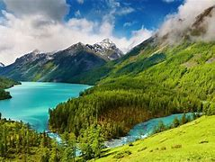

Gambar yang berasal dari satu folder yang sama

Gambar yang berasal dari folder berbeda dengan ukuran :
Gambar yang berasal dari dari sebuah website

Gambar bergerak dari arah kanan ke kiri menggunakan tag marquee
Audio dengan atribut autoplay
Video pada local drive/computer kalian